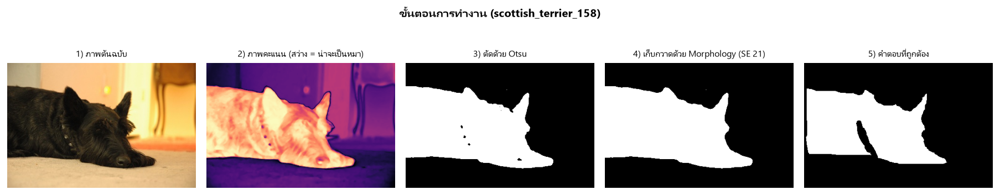

ส่วนที่ 0
src/paths.pyไม่มีใครรันไฟล์นี้ตรง ๆ แต่ทันทีที่ไฟล์ไหน from paths import ...
Python จะรัน paths.py ทั้งไฟล์จากบนลงล่าง หนึ่งครั้ง แล้วจำผลไว้
- paths.py:4
PROJECT= โฟลเดอร์ที่อยู่เหนือsrc/1 ชั้น__file__=src/paths.py→.parent=src→.parentอีกที = โฟลเดอร์โปรเจกต์ - :7-9 สร้าง path ของ
data/images,data/truth,data/useแค่สร้าง object ยังไม่แตะ disk - :12-13 path ของ
results/figures,results/tables - :16-22 path ของไฟล์ดิบจาก Oxford (
images.tar.gzและโฟลเดอร์trimaps) - นิยาม :25-30
clear_folder(folder)สร้างโฟลเดอร์ถ้ายังไม่มี แล้วลบไฟล์เก่าข้างในทิ้ง - นิยาม :33-35
image_names()คืนชื่อไฟล์.jpgทั้งหมดในdata/imagesเรียงตามตัวอักษร ตัดนามสกุลด้วย.stem
ส่วนที่ 1
python 1_prepare_data.pyเตรียมภาพ Scottish Terrier 60 ภาพ พร้อมคำตอบระดับ pixel รันครั้งเดียวจบ
ก่อนเข้า main()
- 1_prepare_data.py:13-16 import
tarfile,cv2,numpy - :18-19
from paths import ...→ รัน paths.py ทั้งไฟล์ (ส่วนที่ 0) แล้วกลับมา - :21-26 ค่าคงที่:
BREED = "scottish_terrier",HOW_MANY = 60,MAX_SIDE = 400และรหัสใน trimaptrimap ของ Oxford: 1 = ตัวหมา, 2 = พื้นหลัง, 3 = แถบขอบที่กำกวม - นิยาม :29-35
shrink(image, how)ย่อภาพให้ด้านยาวสุดไม่เกิน 400 px - นิยาม :38-76
main() - :79-80
if __name__ == "__main__": main()เป็นจริงเพราะรันไฟล์นี้ตรง ๆ → main() จุดเริ่มต้นจริง
ใน main() บรรทัด 38
- :39-40 วน 3 โฟลเดอร์ (images, truth, use) → clear_folder paths.py:25 ทีละรอบ → โฟลเดอร์ว่างเปล่าพร้อมใช้
- :43 กวาดโฟลเดอร์
trimapsหาไฟล์scottish_terrier_*.png→ list ชื่อภาพทั้งหมดของพันธุ์นี้ - :46 dict
wantedแปลงscottish_terrier_1→images/scottish_terrier_1.jpgเพราะชื่อไฟล์ข้างใน tar เป็นรูปแบบนี้ ทำเป็น dict จะได้ค้นหาเร็ว - :49 เปิด
images.tar.gzโดยไม่แตกไฟล์ลง disk อ่านตรงจากใน tar - :50 วนทีละไฟล์ใน tar (มีเป็นพัน ๆ ภาพ ทุกพันธุ์)
- :51-52 ถ้าเก็บครบ 60 แล้ว หรือไฟล์นี้ไม่ใช่พันธุ์ที่ต้องการ →
continue - :55-56 อ่าน bytes ของ jpg →
np.frombuffer→cv2.imdecodeได้ภาพสี BGR - :57-58 อ่าน trimap (.png) ชื่อเดียวกันจากโฟลเดอร์ annotations
- :59-60 อ่านไฟล์ใดไม่ได้ → ข้าม
- :62 → shrink :29 ย่อภาพด้วย
INTER_AREA(เหมาะกับการย่อ) → กลับมา - :63 ย่อ trimap ด้วย
INTER_NEARESTสำคัญ: trimap เป็นรหัส 1/2/3 ถ้าใช้ interpolation อื่นจะได้ค่า 1.5 ที่ไม่มีความหมาย - :65
truth = (trimap == 1)array True/False ว่า pixel ไหนคือหมา - :67-68
truth.mean()= สัดส่วนพื้นที่หมา ถ้าไม่อยู่ในช่วง 15–70% → ข้าม (หมาเล็กเกิน / เต็มจอ) - :70 เซฟภาพลง
data/images/xxx.jpg - :71 เซฟ truth เป็น png ขาว (255) / ดำ (0)
- :72-73 เซฟ
use = (trimap != 3)คือ pixel ที่ไม่ใช่แถบกำกวม → 255 = "นำมานับคะแนน" - :74
saved += 1
- :51-52 ถ้าเก็บครบ 60 แล้ว หรือไฟล์นี้ไม่ใช่พันธุ์ที่ต้องการ →
- :76 พิมพ์จำนวนที่เก็บได้ → จบโปรแกรม
data/images/, data/truth/, data/use/ อย่างละ 60 ไฟล์ ชื่อตรงกันส่วนที่ 2
src/segment.pyตอน import จะแค่ตั้ง BORDER = 0.10, SE_SIZE = 21 :20-21 และนิยามฟังก์ชัน
ไม่มีอะไรรันเอง ทุกฟังก์ชันด้านล่างถูกเรียกจาก 2_run_all.py
make_score(image_bgr) บรรทัด 37–48 · ขั้นที่ 1+2
รับภาพสี → คืน "ภาพคะแนน" 0–255 ยิ่งสว่าง = ยิ่งน่าจะเป็นหมา
- segment.py:42
medianBlurขนาด 5 ลด noise เม็ดเล็ก ๆ ก่อน - :43 แปลง BGR → CIE-Lab แล้ว
.astype(float)Lab ดีตรงที่ระยะห่างระหว่างสีใกล้เคียงกับที่ตามนุษย์รับรู้ ต่างจาก RGB - :45 → background_color(lab) :24
- :26-27 ความหนาของขอบ = 10% ของสูง / กว้าง
- :28-33 ตัดแถบบน / ล่าง / ซ้าย / ขวา ออกมา
reshape(-1, 3)ให้เป็นรายการ pixel (N×3) แล้วconcatenateต่อกัน - :34
edge.mean(axis=0)→ สีพื้นหลัง 1 สี → กลับมาบรรทัด 45
- :46
lab - bgทุก pixel ลบสีพื้นหลัง → ยกกำลังสอง → รวม 3 channel →sqrt= ระยะ Euclidean ในปริภูมิสี - :48 หารด้วยค่าสูงสุด × 255 → normalize เป็น 0–255 →
uint8คืนค่า
to_black_white(score) บรรทัด 51–55 · ขั้นที่ 3
- :53-54
cv2.threshold(score, 0, 255, THRESH_BINARY + THRESH_OTSU)ค่า0ที่ส่งไปถูกละเลย เพราะ Otsu หา threshold เอง: เลือกค่าที่แบ่ง histogram เป็น 2 กลุ่มแล้ว variance ภายในกลุ่มน้อยที่สุด - :55
mask > 0แปลง 0/255 → False/True
clean_with_morphology(mask, se_size) บรรทัด 58–67 · ขั้นที่ 4
- :65
getStructuringElement(MORPH_ELLIPSE, (21, 21))สร้าง SE รูปวงรี - :66
MORPH_CLOSE= Dilation ตามด้วย Erosionเชื่อมชิ้นส่วนที่ขาดกัน เช่น ขนหมาที่ Otsu ตัดหลุดเป็นชิ้น ๆ - :67
ndimage.binary_fill_holesอุดรูดำที่ถูกล้อมด้วยสีขาวเช่น จุดบนตัวหมาที่สีเผอิญคล้ายพื้นหลัง
segment(image_bgr, use_morphology) บรรทัด 70–76
รวม 3 ฟังก์ชันข้างบนเข้าด้วยกัน แต่ 2_run_all.py ไม่ได้เรียกฟังก์ชันนี้ มันเรียกทีละขั้นเองเพื่อเก็บผลกลาง (score, mask ดิบ) ไว้เทียบ
count_pixels(predict, truth, use_pixel) บรรทัด 80–92 · วัดผล
- :87
predict[use_pixel],truth[use_pixel]ดึงเฉพาะ pixel ที่นับ → เหลือ array 1 มิติ - :88-91 นับ 4 ช่องด้วย
&(AND) และ~(NOT)ทายว่าหมา (p)ทายว่าพื้นหลัง (~p)เป็นหมาจริง (t)TP = p & tFN = ~p & tเป็นพื้นหลังจริง (~t)FP = p & ~tTN = ~p & ~t
measures(tp, fp, fn, tn) บรรทัด 95–108
| ค่า | สูตร | ความหมาย |
|---|---|---|
| accuracy | (TP+TN) / ทั้งหมด | ทายถูกกี่ % |
| precision | TP / (TP+FP) | ที่ทายว่าหมา เป็นหมาจริงกี่ % |
| recall (TPR) | TP / (TP+FN) | หมาจริงทั้งหมด เก็บได้กี่ % |
| specificity (TNR) | TN / (TN+FP) | พื้นหลังจริง ทายถูกกี่ % |
| fpr | FP / (FP+TN) | เผลอจับพื้นหลังมาเป็นหมากี่ % |
| f1 | 2PR / (P+R) | ค่าเฉลี่ยฮาร์มอนิกของ precision, recall |
| iou | TP / (TP+FP+FN) | พื้นที่ซ้อนทับ / พื้นที่รวม |
small = 1e-9 บวกไว้ที่ตัวหารทุกตัว กันหารด้วยศูนย์
ส่วนที่ 3
python 2_run_all.pyตัวรันการทดลองทั้งหมด วน 60 ภาพ วัดผล 2 วิธี ลองขนาด SE วาด ROC แล้ววาดรูป 5 รูป
ก่อนเข้า main()
- 2_run_all.py:10-14 import
csv,cv2,matplotlib,numpy - :16
matplotlib.use("Agg")โหมดไม่เปิดหน้าต่าง เซฟเป็นไฟล์อย่างเดียวต้องอยู่ ก่อนimport pyplotที่บรรทัด 17 - :20
import segment as S→ รัน segment.py ทั้งไฟล์ (นิยามฟังก์ชัน + ตั้งSE_SIZE = 21) → กลับมา - :21-22
from paths import ...→ รัน paths.py (ส่วนที่ 0) - :24-25 ตั้ง font ไทยให้ matplotlib และ dpi ของรูป
- :27
SE_SIZES = [1, 5, 9, 13, 17, 21, 25, 31, 41]ขนาดที่จะลอง (1 = ไม่ทำอะไร) - นิยาม :30-270 ฟังก์ชันทั้งหมด:
load,save_table,run_everything,average_iou,try_se_sizes,roc,figure_* - :320-321
if __name__ == "__main__": main()→ main() จุดเริ่มต้นจริง
ใน main() บรรทัด 274 · เตรียมโฟลเดอร์และดูข้อมูล
- :275-276 สร้าง
results/figures,results/tables,results/masksถ้ายังไม่มี - :278 → image_names() paths.py:33 → list ชื่อ 60 ภาพ
- :282 วนทุกภาพ → load(n) :30 เอาแค่
[2]= use →1 - use.mean()= สัดส่วน pixel ที่ถูกตัดทิ้งในload(:30-35): อ่าน jpg เป็นสี, อ่าน truth และ use แบบ grayscale (, 0) แล้ว> 127แปลงเป็น True/False - :283-284 พิมพ์ค่าเฉลี่ยและค่าสูงสุดของแถบขอบที่ตัดออก
[1] รันทุกภาพ :287 → run_everything(names) :49
- :51-53 เตรียมที่เก็บ: list
scores / truths / uses, dicttotalsเก็บผลรวม TP/FP/FN/TN ของ 2 วิธี, listper_image - :55 วนทีละภาพ (60 รอบ)
- :56 → load อ่าน 3 ไฟล์
- :57 → S.make_score segment.py:37 ได้ภาพคะแนน
- :58 → S.to_black_white segment.py:51 ได้ mask ดิบ = "ไม่ใช้ Morphology"
- :59 → S.clean_with_morphology segment.py:58 ได้ mask สะอาด = "ใช้ Morphology"
- :61-63 เก็บ score / truth / use ลง list ไว้ใช้ในขั้น [2] และ [3] จะได้ไม่ต้องคำนวณใหม่
- :65 วน 2 รอบ วิธีละรอบ:
:66 → S.count_pixels ได้ (tp, fp, fn, tn) ·
:67 บวกสะสมเข้า
totals[label]ทีละช่อง · :68-70 สร้าง row ใส่ชื่อภาพ วิธี และค่าจาก → S.measures (ปัด 4 ตำแหน่ง) → append ลงper_image - :73-74 เซฟ mask สะอาดเป็น png ลง
results/masks/
- :76 → save_table :38 เขียน
ผลรายภาพ.csv(120 แถว = 60 ภาพ × 2 วิธี) - :77 คืน 5 อย่าง
scores, truths, uses, totals, per_imageกลับไปmainบรรทัด 287
[2] ลองขนาด SE :290 → try_se_sizes(scores, truths, uses) :95
- :103-104 แบ่งครึ่ง:
tune= index 0–29 (ชุดปรับค่า),test= 30–59 (ชุดทดสอบ) - :107 วนทุกขนาดใน
SE_SIZES(9 ขนาด)- :110 → average_iou(..., tune) :83
- :86 วนภาพในชุดที่กำหนด
- :87 เอา score ที่เก็บไว้มา Otsu ใหม่ (เร็ว เพราะไม่ต้อง
make_scoreซ้ำ) - :88-89 ถ้า size > 1 ทำ morphology ด้วยขนาดนั้น (size = 1 คือไม่ทำ)
- :90-91 นับ pixel → IoU ของภาพนั้น · :92 คืนค่าเฉลี่ย
- :111 ทำแบบเดียวกันกับชุด
test· :113-114 พิมพ์ผล
- :110 → average_iou(..., tune) :83
- :116
best= แถวที่ IoU ชุดปรับค่า สูงสุดเลือกจากชุดปรับค่าเท่านั้น ไม่แอบดูชุดทดสอบ ไม่อย่างนั้นตัวเลขจะดูดีเกินจริง - :117 เซฟ
ขนาด_SE.csv· :118 คืนrows, best - :291-292 กลับมา main พิมพ์ขนาดที่ดีที่สุด เทียบกับ
S.SE_SIZEที่ตั้งไว้ใน segment.py
[3] ROC curve :295 → roc(scores, truths, uses) :124
- :129-130 เตรียม histogram 256 ช่อง 2 อัน:
dogและbackground - :131-133 วนทุกภาพ:
score[use & truth]= คะแนนของ pixel ที่เป็นหมาจริง (และนับ) →bincountนับว่าคะแนนแต่ละค่ามีกี่ pixel → บวกสะสม ทำเช่นเดียวกับพื้นหลัง - :135
dog[::-1].cumsum()[::-1] / dog.sum()= TPR ทุก thresholdสำหรับ threshold t แต่ละค่า มี pixel หมากี่ตัวที่คะแนน ≥ t หารด้วยหมาทั้งหมด ได้ครบ 256 ค่าในคำสั่งเดียว ไม่ต้อง loop - :136 แบบเดียวกันกับพื้นหลัง = FPR
- :138-139 ต่อจุด (0, 0) ท้ายสุด ให้เส้นจบที่มุม
- :140
np.trapezoidพื้นที่ใต้กราฟ = AUC (กลับด้าน[::-1]ให้แกน x เรียงจากน้อยไปมาก) - :141 คืน
fpr, tpr, auc→ :296 พิมพ์ AUC
[4] สรุปผล :299-307
- :300 วน 2 วิธีใน
totals - :301 → S.measures จากผลรวม TP/FP/FN/TN ทั้ง 60 ภาพ
- :302-304 สร้าง row: counts + ค่าวัดผล + AUC · :305-306 พิมพ์
- :307 เซฟ
สรุปผล.csv
| วิธี | Accuracy | Precision | Recall | F1 | IoU |
|---|---|---|---|---|---|
| ไม่ใช้ Morphology | 0.778 | 0.676 | 0.752 | 0.712 | 0.552 |
| ใช้ Morphology | 0.788 | 0.650 | 0.905 | 0.756 | 0.608 |
AUC = 0.814 · Morphology ทำให้ Recall กระโดดจาก 0.75 → 0.91 แลกกับ Precision ที่ลดลงเล็กน้อย
[5] วาดรูป :310-316
- :310 → figure_confusion(totals) :147 heatmap สีฟ้า 2 ช่อง (2 วิธี) ใส่ตัวเลขหน่วยล้าน pixel และ % →
รูป1_confusion_matrix.png - :311 → figure_roc(fpr, tpr, auc, totals) :178 เส้น ROC จาก [3], เส้นประ = เดาสุ่ม, จุด 2 จุด :182-184 = FPR/TPR จริงของแต่ละวิธีจาก
totals→รูป2_roc.png - :312 → figure_se_sizes(se_rows, best) :197 กราฟเส้น IoU ชุดปรับค่า vs ชุดทดสอบ ตามขนาด SE พร้อมเส้นประที่ขนาดที่เลือก →
รูป3_ขนาด_SE.png - :313-314 หาชื่อภาพที่ IoU สูงสุด (วิธีใช้ Morphology) จาก
per_image - :315 → figure_steps(best_image) :216 รัน make_score → to_black_white → clean_with_morphology ซ้ำอีกครั้ง สำหรับภาพนั้น วาง 5 ช่อง →
รูป4_ขั้นตอน.png:223 แปลง BGR → RGB ก่อนแสดง เพราะ OpenCV กับ matplotlib เรียงสีต่างกัน - :316 → figure_examples(per_image, names) :239
- :241-243 กรองเฉพาะแถว "ใช้ Morphology" เรียง IoU มาก → น้อย เอา 3 บน + 3 ล่าง
- :245-262 วนแต่ละภาพ รัน segment ซ้ำ วาง 4 ช่อง (ต้นฉบับ / คำตอบ / ไม่ใช้ / ใช้ Morphology) ใส่ชื่อภาพมุมซ้ายบน IoU มุมขวาล่าง
- :263-265 ใส่หัวคอลัมน์เฉพาะแถวแรก →
รูป5_ตัวอย่าง.png
- :317 พิมพ์ที่อยู่รูป → จบโปรแกรม

figure_steps สร้าง แสดงผลลัพธ์ของทั้ง 4 ขั้นใน segment.py เทียบกับคำตอบที่ถูกต้อง (โหลดจาก results/figures/)เส้นทางแบบย่อ
ทั้งหมดที่เกิดขึ้นเมื่อสั่ง python 2_run_all.py ในบรรทัดเดียวต่อขั้น
python 2_run_all.py └─ :320 main() ├─ :278 image_names() → paths.py:33 ├─ :287 run_everything() ← ทำงานหนักสุด │ └─ ทุกภาพ: make_score → to_black_white → clean_with_morphology │ → count_pixels → measures (segment.py) ├─ :290 try_se_sizes() ← ใช้ score ที่เก็บไว้ ลอง SE 9 ขนาด ├─ :295 roc() ← ใช้ score ที่เก็บไว้ คำนวณ TPR/FPR ทุก threshold ├─ :299 สรุปผล → สรุปผล.csv └─ :310-316 วาดรูป 1-5 → results/figures/
run_everything เก็บ scores ไว้ครั้งเดียว แล้วขั้น [2] กับ [3] เอามาใช้ต่อโดยไม่ต้อง make_score ซ้ำ
ทำให้การลอง SE 9 ขนาด × 60 ภาพ ทำได้เร็ว เพราะข้ามขั้นที่แพงที่สุด (แปลงสี + หาระยะ) ไป